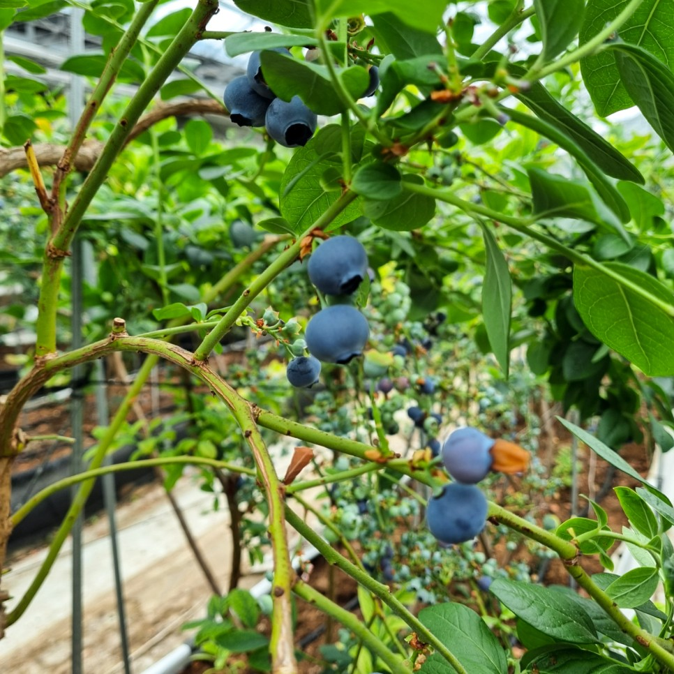
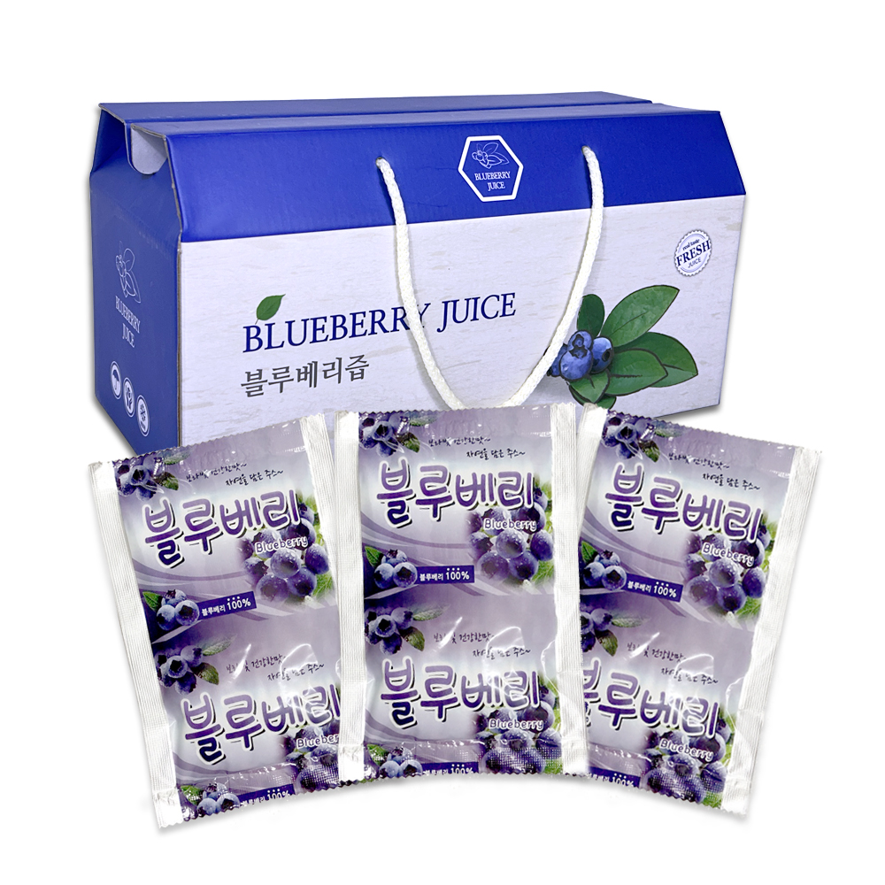
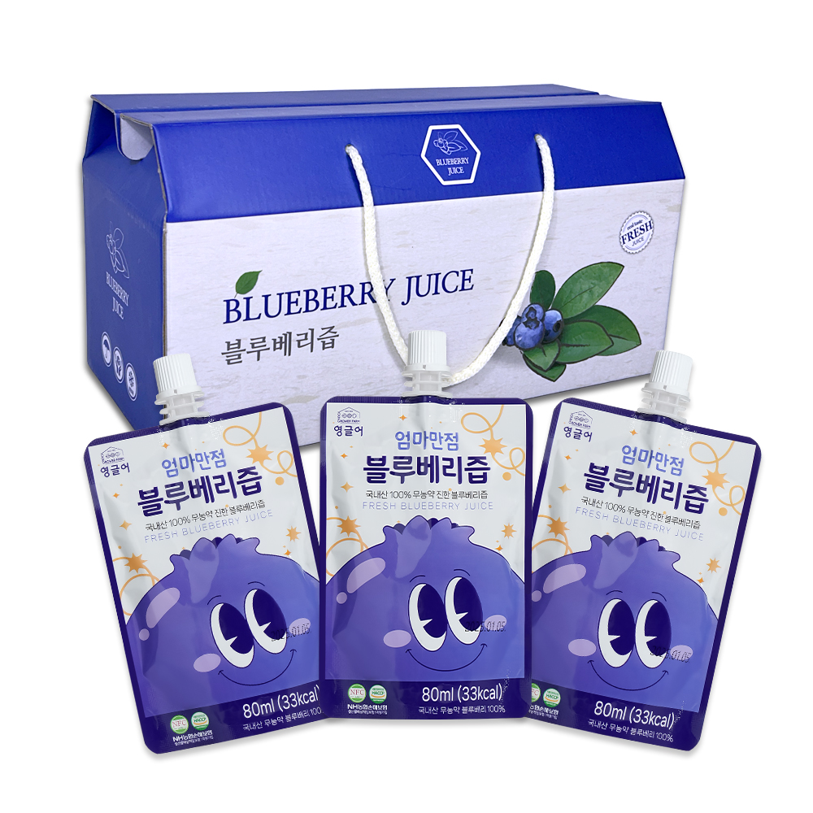

화순 유리온실에서 기른 블루베리
영글어농장은 전남 화순의 유리온실에서 블루베리를 기릅니다. 농장 모니터링 시스템으로 재배 환경과 작물의 상태를 살피며 열매가 익는 과정을 관리합니다.
수확한 열매는 작업자가 하나씩 살펴 선별합니다. 제철 생과는 용기에 담아 출하를 준비하고, 블루베리는 과즙과 동결건조 제품으로도 선보입니다.
재배 현장 보기블루베리즙 제품
두 제품 모두 80mL씩 담은 30포 구성입니다. 한 포씩 간편하게 마시거나, 차갑게 보관한 뒤 탄산수와 섞어 에이드로 즐길 수 있습니다.

국내산 블루베리즙
80mL × 30포

엄마만점 블루베리즙
80mL × 30포